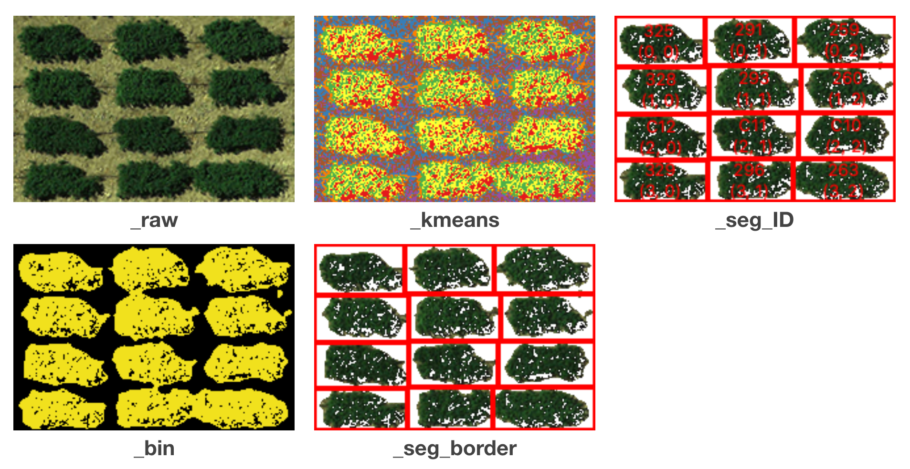
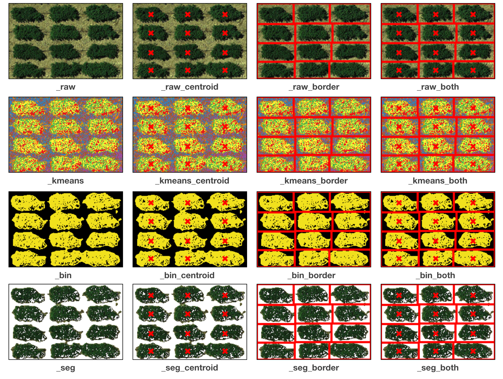

Outputs¶
Tabular results¶
Extracted information for each plot is presented in a .csv file.
Below we will list the definition of each field:
- var
Variety names, which are the IDs learned from the map file. ID will be “unnamed_xx” instead if there’s no map file provided.
- row
Count from the toppest row of plots.
- column
Count from the leftest column of plots.
- area_all
Number of pixels in the segmented rectangle (red boundaries).
- area_veg
Number of POI
Vegetation indices are represented by the averaged value of the POI,
and xxx_std is its corresponding standard deviation.
Below are the formula of each index,
the xth band will be labeled as bx :
- Normalized Difference Vegetation Index (NDVI)
- \[NDVI = \frac{(b_4 - b_1)}{(b_4 + b_1)}\]
- Green Normalized Difference Vegetation Index (GNDVI)
- \[GNDVI = \frac{(b_4 - b_2)}{(b_4 + b_2)}\]
- Combination of Normalized Difference Vegetation Index (CNDVI)
- \[CNDVI = \frac{(2 * b_4 - b_1 - b_2)}{(b_4 + b_1 + b_2)}\]
- Ratio Vegetation Index (RVI)
- \[RVI = \frac{b_4}{b_1}\]
- Green Ratio Vegetation Index (GRVI)
- \[GRVI = \frac{b_4}{b_2}\]
- Normalized Difference Greenness Vegetation Index (NDGVI)
- \[NDGVI = \frac{(b_2 - b_1)}{(b_2 + b_1)}\]
The channel values are recorded in this output as well.
The averaged value of the xth channel and
its standard deviation will be stored
in the column of ch_x and ch_x_std, respectively.
Images for validations¶
Several images are exported for users to validate the results. The title of each sub-figure is its suffix:
Checked Simple output:
unchecked Simple output:

Shapefiles (outputs)¶
The shapefile is generated by the Python package PyShp . Each record represent a segmented plot, containing coordinates of boundaries and all the attributes listed in the tabular results. The shapefile can be integrated to the analysis in QGIS <ork with QGIS> You can also fetch the attributes in Python, we use the first plot as an example:
[1]:
# import PyShp
import shapefile
# load shapefile and get record
file_sp = shapefile.Reader("GRID.shp")
[2]:
# list attributes
file_sp.fields
[2]:
[(‘DeletionFlag’, ‘C’, 1, 0), [‘var’, ‘C’, 20, 20], [‘row’, ‘N’, 10, 10], [‘col’, ‘N’, 10, 10], … …
[3]:
# demo with the first record
records = file_sp.shapeRecords()
first_plot = records[0]
[4]:
# polygon coordinates
first_plot.shape.points
[4]:
[(1153.5487982819586, 154.80525925556415),
(1222.2592755806982, 159.82284445357462),
(1203.8125387566886, 194.30747345836616),
(1135.102061457949, 189.2898882603557)]
[5]:
# attributes (exact the same as ones from the csv output)
first_plot.record
[5]:
Record #0: [‘325’, 0.0, 0.0, 2584.0, 1359.0, 0.23869822, 0.12908907, nan, nan, 0.14441162, 0.07516949, 1.69628965, 0.47877022, 0.99999999, 0.0, 0.23869822, 0.12908907, 36.2281089, 23.588658, 54.5069904, 22.4681228, 29.9830757, 14.3784804, 1.0, 0.0, 1.0, 0.0, 1.0, 0.0, 1.0, 0.0]
Note
When you load the .shp file in Python,
make sure you also have .dbf and .shx
placed in the same location and sharing the same name.
NumPy format of AOI¶
GRID will output the AOI you cropped from the step of Define AOI.
The file is suffixed with _image and has an extension name .npy.
It’s encoded as a
numpy ndarray
and can be loaded in Python:
[1]:
# imports
import numpy as np
import matplotlib.pyplot as plt
[2]:
# load npy file
data = np.load("GRID_image.npy")
data.shape
[2]:
(142, 214, 3)
[3]:
# plot the ndarray
plt.imshow(data)
[3]:
<matplotlib.image.AxesImage at 0x7f94a9e195d0>
{kind=link}
H5 dataset¶
Note
Only by unchecking the option Simple output to obtain this file, as compressing plots into a hdf5 can sometimes be time-consuming.
Segmented plots are structured in
numpy ndarrays
and are compressed in a
HDF5 file .
The file has an extension name .h5 and you can load the file in Python via
H5py :
[1]:
# imports
import matplotlib.pyplot as plt
import h5py as h5
[2]:
# read h5 file in read mode and list all the plot IDs
f = h5.File("GRID.h5", "r")
ids = list(f.keys()); ids
[2]:
[‘plot_1’, ‘plot_2’, ‘plot_3’, ‘plot_4’, ‘plot_5’, ‘plot_6’, ‘plot_7’, ‘plot_8’, ‘plot_9’, ‘plot_10’, ‘plot_11’, ‘plot_12’]
[3]:
# plot all the segmented plots
r = 3; c = 4
for i in range(r * c):
plt.subplot(r, c, (i + 1))
plt.title(ids[i])
img = f.get(ids[i])
plt.imshow(img)
plt.show()
{kind=link}
[4]:
# close the h5 file
f.close()